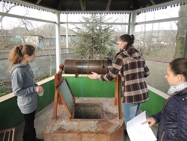
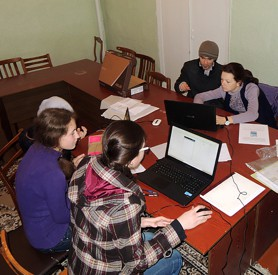

  <div class="wrap wrap--white">
    <section class="panel panel--b">
      {% include breadcrumbs.html %}
      <article class="panel__content panel__story">
        <p>
          <span>Peace Corps Volunteer Chip Moreland had two goals when he pitched the idea for Technovation, a mobile app competition for girls, at the Moldovan high school where he teaches: more opportunities to practice English outside of the classroom and economic opportunity for his students.</span> What he didn't bank on was the idea they came up with&mdash;finding safe well water in their community&mdash;and the app they developed would take the top prize out of over 800 teams in a global competition.
        </p>
        <p>
         Safe drinking water is a huge problem in Chip's village: 80 percent of the people don't have access to potable water. Last year, 67 students in his high school, or 22 percent, contracted Hepatitis A from the water and the village has one of the highest rates of Hepatitis A in Moldova.
        </p>
        <p>
          The girls worked on the app for three months, defining their problem, determining what the app would do, and developing the app itself. The app, aquamea, shows the location of the wells in the village, and allows users to rate the water according to appearance, taste, and smell. The girls also tested the wells for chemicals, microorganisms, and heavy metals, and posted the results. In addition to helping villagers find safe water, the app has an education component that helps them understand the effects of water contaminants and how to treat the water to mitigate future problems.
        </p>

        <div class="bi-image">
          
          
        </div>

         <p>
          For the girls, participating in the competition empowered them to conceive of new futures for themselves&mdash;with careers in business, marketing, and information technology in Moldova&mdash;in a society where entrepreneurship is a relatively new concept, where women are expected to manage the household, and where the brightest students often leave the country to pursue better jobs. For villagers, the app has highlighted the problem of safe drinking water, and some have begun filtering their water. For the mayor, the project has reinforced his efforts to raise money for an aqueduct to bring the village good water.
        </p>
        <p>
          With increased focus on breaking down barriers to girls' education and encouraging local leadership in community development, Peace Corps Volunteers like Chip will be able to make an even bigger, more sustainable difference in the lives of young women around the world.
        </p>

        <div class="tri-image">
          
          
          
        </div>

        <p style="text-align:center;">
          <a class="t-title--3 t--light t-link--no_underline" href="/empoweringleaders.html">Pillar One: Empowering Leaders ></a>
        </p>
        {% include main_logos.html %}
      </article>

    </section>
  </div>
  <!-- end panel-2 -->
